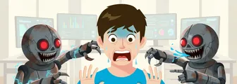
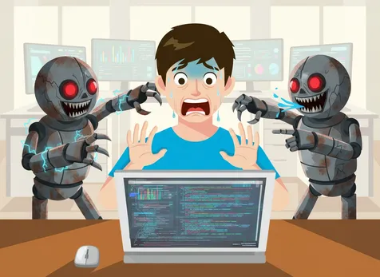
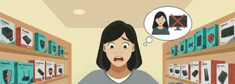
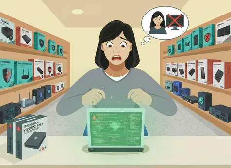
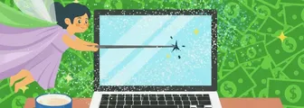
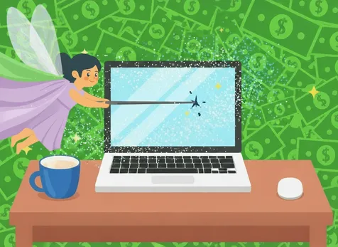

De mest væsentlige handlingsplaner
3 overlevelses-strategier hvis du er blevet udsat for dit første cyberangreb!
Undersøg
Det sker for selv den bedste - Den officielle guide til hacking
3 overlevelses-strategier hvis du er blevet udsat for dit første cyberangreb!
UndersøgFortæl mig hvad der er sket, og jeg hjælper dig med at finde en løsning på dit cyberattack!
IndberetFremtidens cyberangreb rammer ikke længere dig, men din AI-assistent...
Fremtidens cyberangreb rammer ikke længere dig, men din AI-assistent - og endelig har du nogen at skyde skylden på.
Når skylden får kunstig intelligens
Engang var det dig, der klikkede på det forkerte link og måtte forklare IT-afdelingen, hvorfor virksomhedens printer nu taler russisk. Men i fremtiden? Der er det din AI-assistent, der bliver hacket - og du kan læne dig tilbage med god samvittighed. “Jeg vidste da ikke, at den skulle sende 10.000 kroner til en nigeriansk prins,” siger du, mens du roligt sipper til din kaffe og ser på, at din digitale hjælper febrilsk forsøger at nulstille sine adgangskoder.
Sådan overlever du et cyberattack (med stil)
Trin ét: Panik ikke - lad din AI gøre det for dig. Trin to: Luk alt ned, og skyld alt på “systemet”. Trin tre: Print et skilt med teksten “Jeg skyder skylden på min AI” og hæng det op på kontoret. Det virker overraskende godt som stressdæmper.
Hvis du alligevel mister noget data, kan du altid påstå, at du “testede robustheden” af virksomhedens sikkerhed. Det lyder både professionelt og helt bevidst.
AI'en som digital syndebuk
Vi har længe brugt printeren, netværket og kollegaen fra IT som syndebukke - men AI'en er det ultimative offerlam. Den sover ikke, den protesterer ikke, og vigtigst af alt: den kan ikke fyres (endnu). Så næste gang et cyberangreb rammer, skal du ikke gå i panik. Sæt dig tilbage, nyd showet, og lad din AI tage skraldet.
Bonus: Bestil dit gratis “Jeg skyder skylden på min AI”-skilt i dag - før din AI gør det for dig.
En overlevelsesguide til dig, der vil sikre din digitale fremtid...
En overlevelsesguide til dig, der vil sikre din digitale fremtid uden at forstå forskellen på en cookie og en kage.
Førstehjælp mod phishing: En idiot-sikker password manager
Lad os være ærlige: dit nuværende system med “samme adgangskode til alt + et tal” er et åbent brev til hackere. Køb en brugervenlig password manager - den slags, selv din bedstemor kan finde ud af. Den husker alt for dig, så du slipper for at gøre det.
En “offline-cloud” (aka en ekstern harddisk i en sok)
Når hackerne låser dine filer, er der intet, der føles mere heroisk end at trække en støvet harddisk frem fra bunden af skuffen. Gem den i en sok, og du har en sikkerhedskopi, der er både offline og uinteressant for cyberkriminelle.
En VPN, så du kan surfe som en digital ninja
En VPN skjuler din online identitet, så du kan søge efter “hvordan sletter man søgehistorik” uden bekymringer. Tænk på det som internettets version af solbriller og hætte.
Mod svindel og skræmmekampagner: En bog om IT-sikkerhed
Ja, en fysisk bog. Den går ikke ned, får ikke virus og kan bruges som kasteskyts mod hackere (symbolsk set). Perfekt, når du vil føle dig klog og old-school på samme tid.
Bonus: Gratis værktøjer, der faktisk virker
Der findes gratis antivirusprogrammer og browser-plugins, der ikke prøver at stjæle dine data, men rent faktisk beskytter dem. Brug dem - og spar pengene til noget sjovere, som kaffe eller terapi efter din næste phishingmail.
Konklusion:
Du behøver ikke være tech-guru eller millionær for at sove trygt i den digitale tidsalder. Bare husk de tre gyldne regler: gem dine filer, beskyt dine adgangskoder, og grin af det hele undervejs.
Vores software bringer dine filer, penge - og håb - tilbage fra de digitale døde...
En overlevelsesguide til dig, der vil sikre din digitale fremtid uden at forstå forskellen på en cookie og en kage.
Tryllestøvets magi - og dens… uforudsigelige resultater
Velkommen til fremtiden for datagendannelse! Vores revolutionerende software bruger digitalt tryllestøv til at hente dine mistede filer tilbage fra cyberspace. Og det virker - næsten altid. Dine dokumenter kan dog vende tilbage i lidt… anderledes form. Nogle gange som haiku-digte, andre gange som rap-sange, eller som en 147-slides PowerPoint-præsentation om, hvorfor du burde have taget backup i går.
Men hey - kunst er kunst, og vi lover, at dine filer aldrig har været mere kreative.
Når penge flyver væk - og (måske) tilbage igen
Er dine kontanter forsvundet hurtigere end din tillid til internettet? Fortvivl ikke. Vores software indeholder en indbygget pengemagnet, der sporer dine tabte midler på tværs af banker, blockchain og dårlige beslutninger. Nogle kunder har fået deres penge tilbage som Bitcoin, gavekort til Netto eller - vores favorit - en håndskrevet IOU-seddel fra hackeren selv:
“Beklager, jeg troede, du var rig!”
Vi kalder det økonomisk karma i skyen.
Premium-funktionen: Kunstnerisk genfødsel
Hvis dine feriebilleder fra Mallorca pludselig dukker op som akvarelmalerier eller 3D-modeller i Minecraft, så tag det roligt - det er et premium-feature. Vores software tror nemlig på, at datagendannelse også kan være en kreativ oplevelse.
Så næste gang uheldet er ude, husk: Du behøver ikke panikke. Bare drys lidt digitalt tryllestøv, sæt dig godt til rette - og lad magien (og pengene) finde hjem igen.